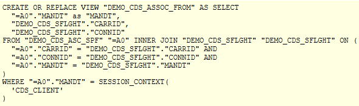
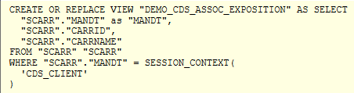
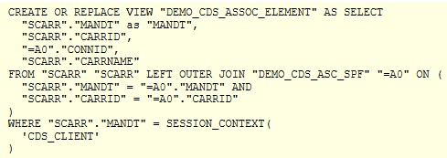
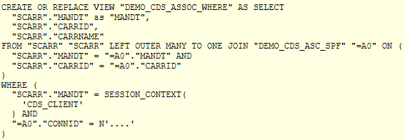
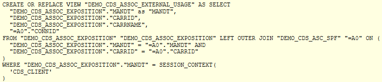
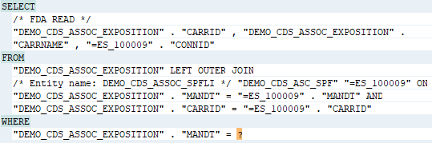

AS ABAP Release 755, ©Copyright 2026 SAP SE. All rights reserved.
ABAP - Keyword Documentation → ABAP - Core Data Services (ABAP CDS) → ABAP CDS - Data Definitions → ABAP CDS - DDL for Data Definitions → ABAP CDS - CDS Entities → ABAP CDS - DDIC-Based Entities → ABAP CDS - DDIC-Based Views → CDS DDL - DEFINE VIEW ddic_based → CDS DDL - DDIC-based View, SELECT → CDS DDL - DDIC-based View, SELECT, Associations →CDS DDL - DDIC-based View, Associations and Joins
This topic describes the different use cases of CDS associations. It explains in which use case a join is generated on the database and which join type is generated each time. Examples and screenshots of the SQL statement generated on the database are provided to further illustrate the transformation into joins.
When a CDS association is instantiated as join on the database, then the association source represents the left side and the association target represents the right side of the join. The ON condition of the association is added to the ON condition of the join.
There are the following basic use cases for CDS associations:
Using a path expression in the FROM clause
Use case: the data source of a CDS view entity after FROM is specified as path expression.
Example:
SQL statement generated on the database:

The SQL statement generated on the database shows that the path expression is transformed into an inner join on the database.
Exposing a CDS association
Use case: an association is defined and exposed in the element list of a CDS view entity. In this way, it can be used in other CDS entities. However, the association is not part of the output and no data is selected from the association target.
Example:
SQL statement generated on the database:

The SQL statement generated on the database shows that no join is generated and the association is not mentioned in the statement that is passed to the database.
Adding a field from the association target to the element list
Use case: an association is defined and an element from the association target is included in the element list of the same CDS view entity. In this example, the association is used, but not exposed, and therefore it cannot be used in path expressions of other CDS entities.
Example:
SQL statement generated on the database:

The SQL statement generated on the database shows that the path expression is transformed into a left outer join on the database.
Using a path expression in the WHERE clause
Use case: an association is defined and used in the WHERE condition of the same CDS view entity. In this example, the association is used, but not exposed, and therefore it cannot be used in path expressions of other CDS entities.
Example:
SQL statement generated on the database:

The SQL statement generated on the database shows that the path expression is transformed into a
left outer join with the cardinality many to one.
Using an exposed association in an external view
Use case: A CDS view entity uses an association that was defined and published in another CDS entity. The association is used in a path expression to include a field from the association target in the element list of the CDS view entity.
Example:
SQL statement generated on the database:

The SQL statement generated on the database shows that the path expression is transformed into a
left outer join on the database.
Note that this happens in the view that uses the association, and not in the view that defines the association.
Using an exposed association in ABAP SQL
Use case: The program DEMO_CDS_SELECT_ASSOC uses an association that was defined and published in a CDS view entity in a path expression in ABAP SQL.
Example:
SQL statement generated on the database:

The path expression is transformed into a left outer join on the database.